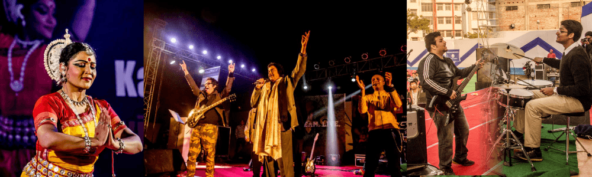
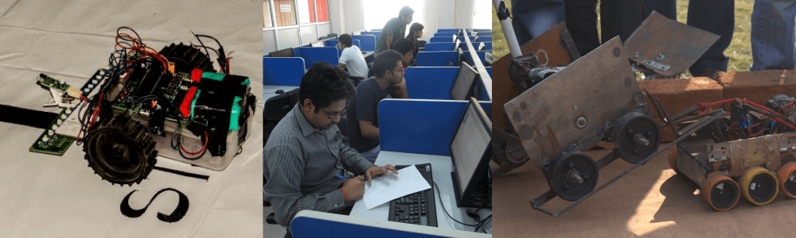
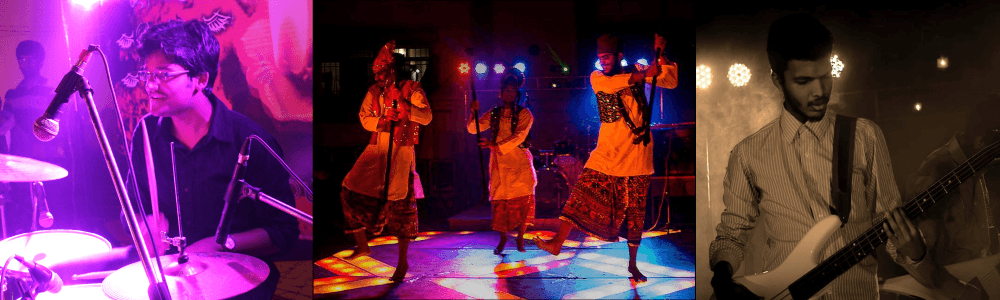

Popular Events
ANWESHA

'Anwesha', which gets its name from the Sanskrit metaphrase for ‘expedition’, is IIT Patna’s annual 3-day techno-cultural festival organised by the student community. The fest, which made its humble beginnings in the year 2010 as an intra-college festival with only a few dozen events, has today grown into one of the biggest and most eagerly awaited youth festivals of the region. Anwesha today is a conglomeration of events that draw from diverse disciplines, ranging from the engineering sciences to the visual & performing arts.
For the latest news and updates about ‘Anwesha’, please visit the student-run portals listed below. The views/ opinions expressed at the links belong solely to the authors and may not necessarily represent the views of the Indian Institute of Technology Patna.
Official website: www.anwesha.info
Facebook page: www.facebook.com/anwesha.iitpatna
YouTube Channel: www.youtube.com/user/AnweshaIITP
CELESTA

Indian Institute of technology Patna each year celebrates its Technical Fest, christened as ''CELESTA'. This is a great beginning, which strives to inculcate interest in young minds to pursue technology and make it their passion.
For the latest news and updates about ‘Celesta’, please visit the student-run portals listed below. The views/ opinions expressed at the links belong solely to the authors and may not necessarily represent the views of the Indian Institute of Technology Patna
Facebook page: www.facebook.com/CelestaIITP
REVERBERANCE

It was started in 2008 and since then it has gained unmatched popularity. It is a cultural celebration held around 'Diwali'. Beautiful decoration through lights added with fantastic cultural performances makes IIT Patna really reverberate with joy during the ‘Reverberance’.
For the latest news and updates about ‘Reverberance’, please visit the student-run portals listed below. The views/ opinions expressed at the links belong solely to the authors and may not necessarily represent the views of the Indian Institute of Technology Patna
Facebook page: www.facebook.com/iitp.sociocultural
SPORTS EVENTS

The Students' Gymkhana Building, situated in the IIT Patna hostel compound, has a synthetic badminton court and a gymnasium. In addition, the students have access to a basketball court, a volleyball court, table tennis tables and a football-cum-cricket ground within the transit campus. State-of-the-art facilities for all sports are planned at IIT Patna’s main campus in Bihita.
For the latest news and updates about ‘Sports Events’, please visit the student-run portals listed below. The views/ opinions expressed at the links belong solely to the authors and may not necessarily represent the views of the Indian Institute of Technology Patna
Facebook page: www.facebook.com/SportsIITPatna
Badminton
Rocketing smashes and precise serves fill up the badminton court with extreme action, nervousness and most importantly fun. Badminton is one of the most popular recreational activity for all ages and is extremely popular in all ages. it is one of the few games that can be played at any time, and in any weather. IIT Patna`s badminton court never fail to find able players all round the year. A lot of people play badminton for fitness and some love the leisure. The inter-department badminton competition searches for the best players in all the departments who fight the battle to become the ultimate winner of raquets. The competition gets the huge participation and audiences and the best players get the opportunity to represent the institute in inter-IIT sports meet.
PPL (Patna Premier League)
The two most inseparable words "Cricket and India" have found another equally inseparable pair "PPL and IIT Patna". Originally started in 2009 it sprang up as a much celebrated tournament of IIT Patna. The thrill and competition which the event had witnessed has grown enormously during the recent years and could be clearly seen in the fifth edition this year. Whether it be the "Pythons" taking on the "Bolts" or the "Invincibles" taking on the "Falcons" every match has witnessed the enormous talent which the players had displayed.
Thus PPL league provides the platform for players to display their talents and improve their skills thereby achieving the purpose for which it was established as well as providing a break from the strenuous curriculum and helping in the all-round development of the individual.
BasketBall
This sweat-flooded, hormone-active game is tested to its limits only from Inter-department basketball matches. There's heavy action,awe-inspiring tackles, bulls eye aiming, winning strategies and lots more. In the recent tournament, the computer science branch was the winner, owing to its high spirited engineers, showing a breathtaking display of team spirit and sportsmanship.
May this fever of basketball remain in the hearts of engineers!